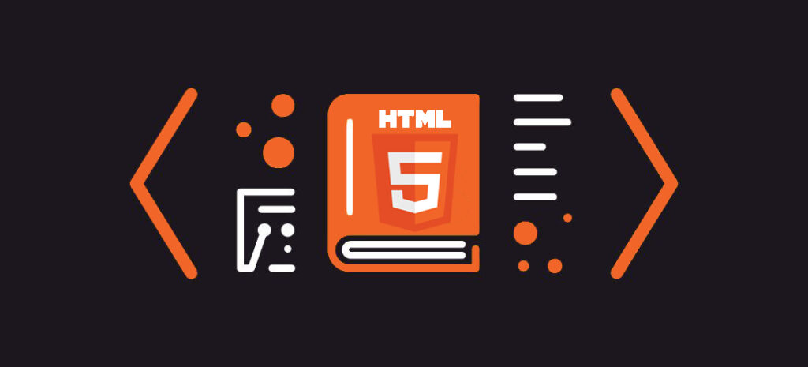

Inici
Aquesta és la pàgina principal del meu portfoli. Aquí pots veure els meus treballs, projectes i wireframes que he fet aquest curs. Tot està organitzat per seccions perquè sigui fàcil mirar-ho: pràctiques d’HTML i CSS, altres activitats i els meus esbossos. També hi ha imatges i fitxers que es poden descarregar per veure millor
